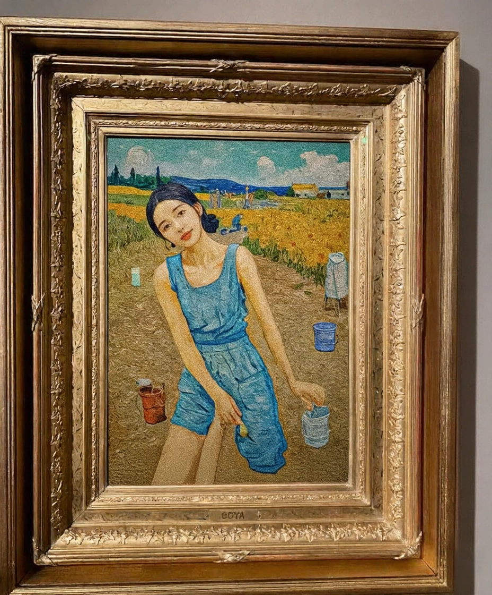

Monterey Signature is a private collection focused on [add short mission or focus]. The goal: document, preserve, and share each item's story and provenance.
Curator
Dreamboat — collector, archivist, photographer.
Vision
Emphasize story-based curation with clean photographic presentation.
Gallery
Click any photo to enlarge.

• •
Provenance
Notes
The Painting Between Worlds
The Painting Between Worlds
He painted it on a Tuesday in autumn, when the light through his apartment window fell at that specific angle that made everything feel both possible and forbidden.
The canvas had been blank for weeks...
The Painting Between Worlds
He painted it on a Tuesday in autumn, when the light through his apartment window fell at that specific angle that made everything feel both possible and forbidden.
The canvas had been blank for weeks. He'd bought it with intention—to paint something safe, maybe a landscape, maybe nothing at all. Something that wouldn't betray what he felt.
But his hand had other plans.
The figure emerged in blue—that particular shade he'd seen her wear once, the color of distance and longing. Sleeveless. Arms bare to the elbow, shoulders exposed to painted sun. And yet he gave her the headscarf too, dark against her hair, because that's also who she was. Both. Always both.
Who am I to paint her like this? he wondered as he worked. A Christian boy painting a Muslim girl in clothes she'd never wear, in a field that exists nowhere but in my hoping.
But the brush kept moving.
The golden field spread beneath her feet—not quite the Paradise she'd been taught, not quite the Heaven he knew from Sunday school, but something in between. A third place. Their place, maybe, if such a place could exist.
He scattered buckets across the composition without thinking—vessels for water, for rituals he didn't fully understand but had watched her perform. The careful washing before prayer. The devotion that both drew him to her and reminded him of the unbridgeable distance between them.
Except in the painting, there was no distance.
In the painting, she stood free and faithful at once. In the painting, she could be both the girl who covered herself in modesty and the woman who existed in his dreams uncovered—not in desire, but in truth. The full complicated truth of her, if she were ever allowed to be all of herself at once.
When his roommate walked in, he almost covered it.
"Who's that?"
"No one. Just... practicing."
But she was someone. She was the girl from his literature class who quoted Rumi and C.S. Lewis in the same breath. Who laughed at his jokes but never let him walk her home. Who said once, quietly, "My family would never understand," and he'd known she meant him.
At night, he'd stare at the canvas. The figure's eyes looked back with something like permission. Not to love her—he already did that, hopelessly. But permission to imagine a world where the walls between them were less solid. Where blue fabric could drape over bare shoulders and it wouldn't mean rebellion or sin but simply choice. Where her God and his God might look at them and see not transgression but two people trying their best to be good.
He would never show it to her. How could he? How do you give someone a painting that says: I see you trapped between who you are and who you're allowed to be, and I painted you free?
How do you say: I'm trapped too, loving someone I can't have, painting prayers to a God I'm not sure is listening?
So he titled it "Untitled" because some longings have no name.
Because some loves exist only in the space between faith and feeling.
Because the woman in blue is still standing there, in that golden field, in a world he created where the impossible is, for just a moment, beautifully real.
The Story
A timeline of select pieces and how they joined the collection.
First Acquisition
Short note about the first important piece and why it matters.